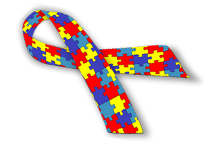

Dia Mundial da Conscientização do Autismo
O QUE É
O Abril Azul tem o objetivo de envolver toda a comunidade nas causas que incluem tais distúrbios e condições do TEA, a fim de buscar uma sociedade mais consciente, menos preconceituosa e mais inclusiva. A causa é celebrada anualmente no dia 2 de abril, que é considerado o Dia Mundial de Conscientização do Autismo.
O OBJETIVO
Hoje, 2 de abril, é celebrado o Dia Mundial de Conscientização Sobre o Autismo, com o objetivo de disseminar informações e combater discriminações e preconceitos que cercam as pessoas afetadas pelo Transtorno do Espectro Autista (TEA). A data foi estabelecida pela Organização das Nações Unidas (ONU) em 2007.
SINAIS
Dificuldade na comunicação, caracterizado por uso repetitivo da linguagem e dificuldade para iniciar e manter um diálogo. Alterações comportamentais, como manias, apego excessivo a rotinas, ações repetitivas, interesse intenso em coisas específicas e dificuldade de imaginação.